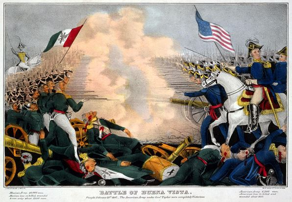
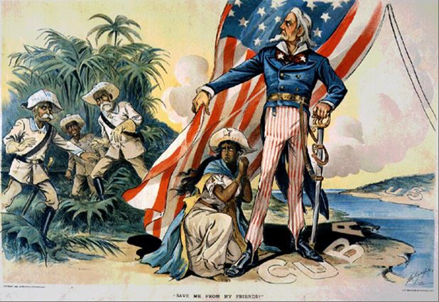
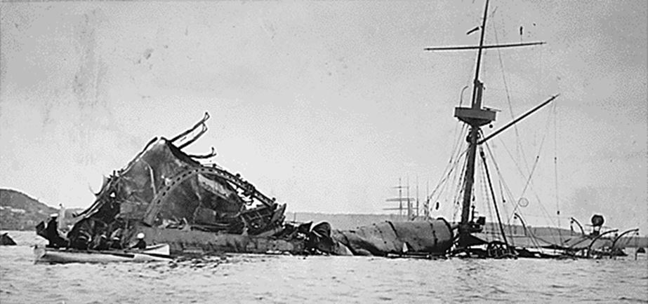
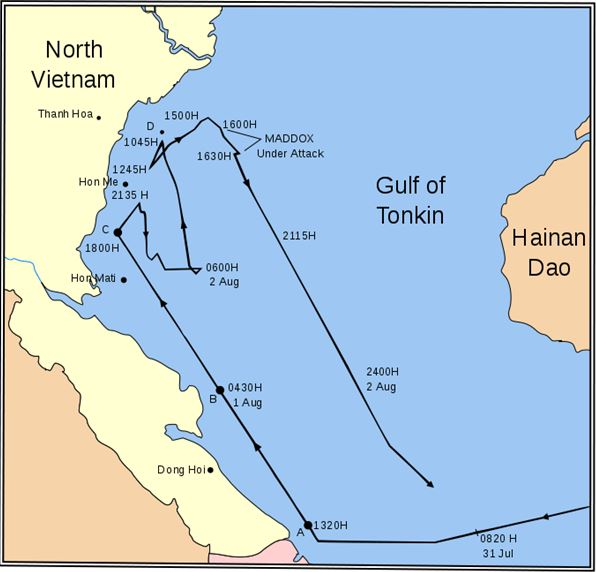
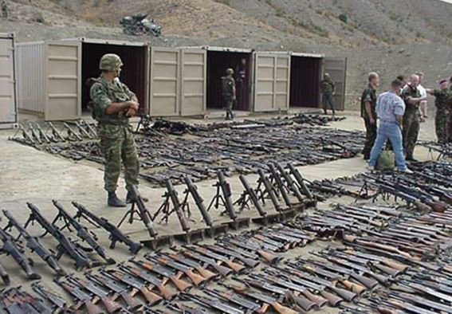

« Arrêtes ou tu vas t’en prendre une ! » - phrase compréhensible par chacun, qui structure nos vies quotidiennes à travers des rapports de force depuis que l’humanité existe, même dans sa forme la plus primitive. Cette mise en garde est en général exprimée du plus fort vers le plus faible, ou vers l’égal tout au moins. Elle est moins habituelle lorsque le fort a tout fait pour que l’issue soit conflictuelle … Notre propos sera ici de montrer qu’un certain grand pays d’outre-Atlantique a souvent usé de cette démarche après avoir poussé l’autre (le plus faible donc) à la faute, et l’avoir mis ainsi dans une sorte de situation sans issue : le faible ne pouvait qu’accepter le conflit, tout en sachant que l’issue en serait tragique pour lui. Les calculs du fort sont alors des plus évidents.
Intéressons-nous à quelques exemples pour en trouver une ligne directrice :
Les immenses territoires du Nord du Mexique étaient faiblement peuplées, les frontières assez imprécises … au Texas furent installés des colons américains, qui rapidement se plaignirent de brimades, et finirent par déclarer l’indépendance vis-à-vis du Mexique, avec l’aide d’un fort parti annexionniste à Washington. Le jeune état qui en résulta était encore trop petit pour certains, et notamment le nouveau président US James Knox Polk : celui-ci fit envoyer des troupes dans les territoires frontaliers, qui construisirent des forts dans les zones désertiques… et ce qui devait arriver arriva, à force de patrouiller dans ces zones : un escadron de cavalerie américaine fut attaqué en mai 1846 par les Mexicains et subit de lourdes pertes … Le président Polk tenait son prétexte (ce que d’autres hommes politiques américains dénoncèrent d'ailleurs) et ce fut la guerre, contre un pays plus faible et infiniment moins bien préparé. Le traité de Guadeloupe de 1848 consacra pour le Mexique la perte du Texas, de la Californie, de l’Utah, du Nevada, du Colorado, du Wyoming, du Nouveau-Mexique et de l’Arizona (rien que ça).
On peut à ce sujet se féliciter de ce que Napoléon ait vendu les vastes territoires de la Louisiane et du Mississipi aux Américains car sans cela, une guerre similaire aurait fini par avoir lieu avec la France, vu l’obstacle à l’expansion vers l’Ouest que représentaient ces territoires…
Les Anglais firent de même au 19° siècle, en installant des colons mineurs de charbon dans les républiques boers d’Afrique du sud, qui ensuite se plaignirent de discriminations, qui avec un ou deux petits incidents menés en épingle donnèrent prétexte à l’Empire britannique pour envahir ces petits pays qui les contrariaient depuis longtemps.
Une fois réglé le cas du Mexique, ce fut à son ancienne puissance coloniale que l’on s’intéressa : l’Espagne en déclin, à qui l’on avait arraché la Floride en 1810 dans des circonstances analogues à ce qui précède, contrôlait encore Cuba, mais avec difficultés. Il ne fallut pas beaucoup d’efforts pour qu’un fort parti belliciste à vernis compassionnel se manifeste à Washington – et dès lors le moindre incident pouvait servir de détonateur. C’est ce qui se produisit quand le cuirassé USS Maine explosa en février 1898 dans le port de la Havane : explosion accidentelle d’une soute à munitions, telle qu’il s’en produisait régulièrement dans les navires de guerre de l’époque (cuirassés français Iéna et Liberté) mais le prétexte était trop beau, et une des premières grandes campagnes de presse de l’histoire fut menée par les journaux de New York pour chauffer une opinion publique déjà acquise. L’affaire fut ensuite rondement menée « pour la civilisation et la liberté » et quelques mois après, l’Espagne avait perdu Cuba, les Philippines, Porto Rico et Guam… belle affaire, « spendid little war » dirent-ils, avec maitrise des outils de communications, le modèle était maintenant bien rodé.

USS Maine
Pearl HarborOn parle toujours de l’attaque de Pearl Harbor comme d’un coup de traitrise, comme si les Japonais s’étaient un beau matin réveillés avec l’idée d’aller attaquer la flotte américaine dans sa base du Pacifique. C’est oublier que le 26 juillet 1941, les Américains suivis par la Grande-Bretagne et les Pays-Bas, avaient gelé tous les avoir japonais, et surtout imposé un embargo total sur l’acier et le pétrole à destination du Japon, suite à son expansion en Indochine, elle-même corollaire de l’occupation de la Chine. Ce pays sans ressources naturelles se retrouvait dramatiquement acculé, avec la perspective d’une pénurie de pétrole notamment.
Et c’est ainsi que malgré l’opposition d’une partie de la hiérarchie militaire, le Japon se lança dans la guerre que l’on connait - pour subir la défaite quelques années plus tard, y ayant été en quelque sorte forcé…
Après avoir supplanté les Français du Sud-Vietnam de façon parfois brutale après leur défaite (il y eut des combats de rue à Saigon entre soldats américains et parrains corses) les Américains s’implantèrent dans la région et y commencèrent une intense activité de coopération et patrouilles, notamment maritimes. Un destroyer US qui croisait au fin fond du golfe du Tonkin – les cartes sont parlantes – à quelques kilomètres seulement des côtes nord-vietnamiennes et au moment même où des commandos sud-vietnamiens attaquait une station radar du Nord sur une ile voisine, fut suivi par des vedettes rapides nord-vietnamiennes, des tirs furent échangés, des chasseurs Crusader vinrent à la rescousse… et une deuxième attaque similaire deux jours après – mais de nuit - fut encore moins probante, avec des échos radars fantômes, des tirs dans l’obscurité, des torpilles écoutées qui étaient surtout des hélices de bâtiment US … ici comme ailleurs, quand on commence à ergoter sur les miles ou les kilomètres des eaux territoriales, c’est qu’on cherche les ennuis (vous n’embêtez pas votre voisin pour sa haie avec des centimètres, non ?)
Vous pouvez aussi essayer de marcher de long en large devant la porte de son garage, et vous aurez ainsi tout préparer pour la confrontation, avec d’autant plus de motivation que ce voisin que vous n’avez jamais aimé fait 30 cm de moins que vous. Toujours est-il que ces évènements furent suivis de la Résolution du Golfe du Tonkin, qui lançait les Américains dans la guerre du Vietnam…
Le but n’est pas de faire ici un inventaire négatif de toutes les interventions américaines dans le monde – ne jetons pas le bébé avec l’eau du bain (il y eut aussi le Liban en 1958, Saint-Domingue en 1965) Certaines rentrent tout simplement dans le cadre d’une projection de puissance, au service d’intérêts nationaux bien déclarés, sous pavillon national, ou d’appels à l’aide de gouvernements amis. Rien que de très normal finalement, les forces armées étant faites pour ça, surtout celles dites de projections (troupes de marines, navires amphibies, parachutistes). Le problème comme nous l’avons dit vient des capacités d’intoxication ou de dissimulation de la vérité auxquelles on assiste parfois, pour dissimuler la faute que l’on pousse l’adversaire à commettre.
Plus près de nous ce furent les accords de Rambouillet de 1998, que l’on prétendit signés pour pouvoir en accuser par la suite les Serbes de ne pas les avoir respectés. Or ceux-ci ne pouvant en aucun cas accepter l’occupation militaire de tout leur territoire par l’OTAN (quel pays aurait accepté ça ?) ils s’étaient retirés assez rapidement – et il ne restait plus que la partie albanaise, qui signa … seule (enfin, on mit au bas du papier quelques signatures de pays organisateurs) et tout le monde se dirigea joyeusement vers la guerre, au motif de non-respect d’accords … qui n’avaient été signés que par une seule partie !
C’est une autre façon de pousser l’autre à la faute, que de lui imposer des accords soi-disant de paix mais inacceptables pour lui, et cela doit se faire depuis l’Antiquité. La petite Serbie de Milosevic ne voulait certes pas la guerre avec les forces de l’OTAN, mais on la lui imposa (et puis Bill Clinton avait dit à Jacques Chirac « vous devez accepter une composante islamique de l’Europe » - le Kosovo en l’occurrence – à l’époque cette petite phrase fit moins de bruit que si elle avait été prononcée aujourd’hui, les temps changent).
Il y eut ensuite une phase de transition pendant laquelle on mit en place un contingent d’observateurs au Kosovo, ce qui justifia l’installation en Macédoine limitrophe d’une force d’extraction de ces mêmes observateurs, au cas où ils auraient été menacés – quel montage ! Il est utile de se rappeler que quelques mois plus tard ces observateurs pour lesquels on avait tant craint pendant des mois, quittèrent la province en une matinée et sans incidents, et que la force d’extraction voisine se transforma instantanément en ce pourquoi elle avait été conçue dès le début, en une force d’occupation déjà positionnée à la frontière.
Puis vint 2003 au Proche-Orient, avec un Irak qui avait été bombardé puis isolé pendant douze ans, qui n’avait donc plus ni pièces détachées ni munitions, et surtout envie de se battre – que restait-il à y bombarder ? Surtout que l’USAF avait appliqué pendant toutes ces périodes au-dessus du territoire irakien une conduite très « police américaine » (il m’a regardé, il m’a menacé, boum !) On savait bien que les Irakiens n’attaqueraient pas – ils avaient assez pris en 1991 - et on faisait semblant d’ignorer la discipline de leurs troupes – aussi toutes les stratégies aériennes étaient-elles basées sur la possibilité de « rogues pilots », des pilotes qui auraient subitement quitté leurs espaces d’évolutions autorisées pour se précipiter à l’assaut des avions de la coalition… On leur reprocha ensuite d’avoir déplacé des canons à l’intérieur de leur pays, et de menacer ainsi les forces américaines du Koweït – et quand on les attaqua, et qu’on chercha ces fameuses armes de destruction massives, la réponse magnifique fut: « ils les ont enterrées ». C’est vrai que face à l’agression, on s’est toujours depuis l’Antiquité empressé d’enterrer ses armes les plus perfectionnées…
On ne fera pas injure aux lecteurs de cette revue, en prétendant leur apprendre qui était derrière les évènements du Maïdan de février 2014, et qui distribuait des petits pains aux manifestants. Notons juste que les tireurs sur les toits sont une technique bien commode pour faire partir en vrille une situation déjà tendue, en tirant un peu sur tout le monde et sans qu’on les retrouve jamais, des barricades d’Alger en 1960 à Bucarest en décembre 1989… L’important étant que le bon peuple croie que les tireurs sont les méchants, ce qui justifie après la reprise en main, et la suite du processus.
Usera-t-on encore de tels procédés pour démarrer une guerre ? Certains semblent encore y croire, comme ces soldats US en tenue hivernale qui défilaient et se faisaient prendre en photos complaisamment à la frontière russe – avec leurs armes approvisionnées, soyez-en sûrs.
Que sera demain ? Une nouvelle administration s’est récemment mise en place aux Etats-Unis, dont le moins que l’on puisse dire est qu’elle n’est pas acceptée par ceux qui ont perdu l’élection. Des promesses ont été faites de rétablir de meilleures relations avec la Russie, de ne plus prétendre à imposer son modèle (ce que les fauteurs de guerre qualifieront de « repli sur soi »). Le nouveau Président a dit « mon job n’est pas de représenter le monde, seulement les Etats-Unis d’Amérique » - alors d’une certaine façon l’espoir est là, en espérant juste qu’une trop grande part de leur population n’ait pas été intoxiquée depuis des années par des représentations (films notamment) qui ont toujours besoin de créer un ennemi, si possible déshumanisé, bref le vrai méchant. Regarder les dernières productions hollywoodiennes d’action ne pousse pas à l’optimisme – mais parfois même ces films passent à la trappe après un certain temps, comme le fantastique Rambo 3 qui en 1988 glorifiait les bons talibans en lutte contre les méchants soviétiques. La propagande et la désinformation ne gagnent pas à tous les coups.
Partager cette page